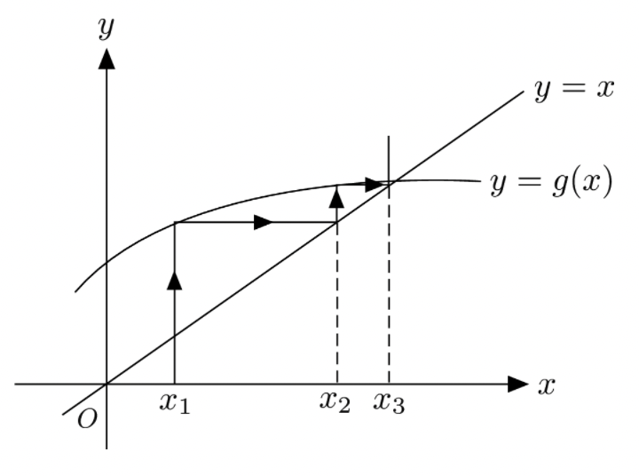
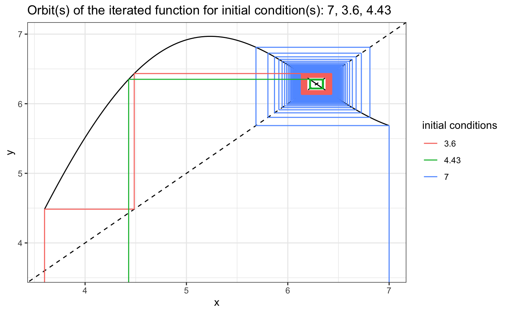
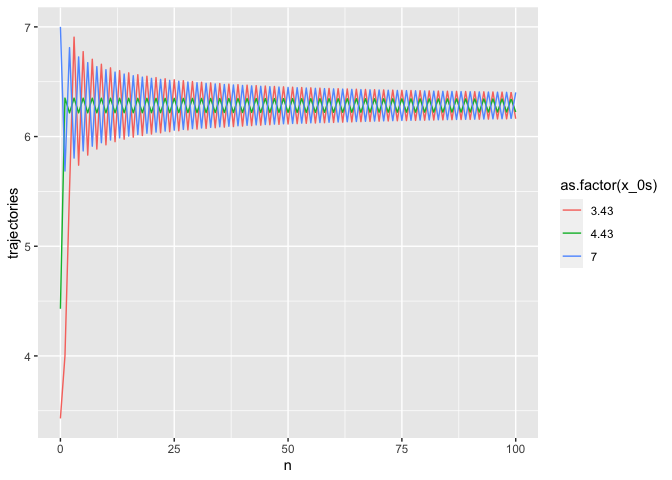

Graphical iteration is one graphical way to visualise the orbits of a function for different initial conditions. The main advantages of graphical iteration over other ways to visualise function orbits are that graphical iteration provides a visualisation of the orbits as a trajectory on the plot of the function being iterated. This can give insights into the behaviour of the orbits that might not be apparent from other ways of visualising the orbits. It is another way to conceptualise the behaviour of orbits.

A step by step guide:
This past winter, I wrote a short program in R to produce graphical iteration plots for custom mathematical functions as a tool and fun side-project for a college course on chaos and fractals which I took at College of the Atlantic, in Bar Harbor, ME.
Although I think of myself usually more as a python programmer, I find R has some great advantages when it comes to plotting thanks to the tidyverse library collection, which includes the excellent ggplot.

The program is fairly simple. It is composed of several blocks. First, a setup block, in which the user specifies the program settings such as the function to iterate, initial conditions, number of iterations, and the plot window. Then, the block where most of the code lifes, the main body of the program, which is composed of a function to collect plotting data for the user-specified function, a function to collect and return graphical iteration plotting data, and a last function to collect and return time series plotting data according to the program settings. In the final block of this program, we run the functions from the last block with the user-specified setup settings, and plot the graphical iteration and time series orbit plots using the tibbles the functions return.
# set your initial condition and desired number of iterations:
x_0s <- c(3.43, 4.43, 7)
N <- 100
# set the iteration plot x axis range (lower and upper bounds):
x_min <- 0; x_max <- 8
y_min <- -2; y_max <- 8
use_custom_range_x <- FALSE
use_custom_range_y <- FALSE
# declare your function here:
func <- function(x){
return(-2 * sin(x) + x) # function goes here
}get_function_data <- function(range = c(-1, 1), steps = 100){
steps_multiplier <- (range[2]-range[1])/10
if(steps_multiplier < 1){steps_multiplier <- 1}
# adds steps to get data for depending on the number of 10s
# in the specified plot x range
x <- seq(from = range[1], to = range[2], length.out = steps * steps_multiplier)
y <- array(dim = steps * steps_multiplier)
for(i in 1:length(x)){
y[i] <- func(x[i])
}
return(data.frame(x = x, y = y))
}
graphical_iterator <- function(x_0s, N = 100){
segments <- data.frame()
for(i in x_0s){
start <- i
vert <- FALSE
x_0 <- rep(i,times=1+(N*2))
xstarts <- c(start)
ystarts <- c(y_min)
xends <- c(start)
yends <- c(func(start))
# iteratively get the coordinates of the next segment points
for(i in 1:(2 * N))
# range = 2 * N because every step will be described by two segments
{
# if the last segment was vertical, the next must be horizontal
if(vert){
xstarts <- c(xstarts, start)
ystarts <- c(ystarts, start)
xends <- c(xends, start)
yends <- c(yends, func(start))
vert <- FALSE
}
else{
xstarts <- c(xstarts, start)
ystarts <- c(ystarts, func(start))
xends <- c(xends, func(start))
yends <- c(yends, func(start))
vert <- TRUE
start <- func(start) # update start value
}
}
segments <- rbind(segments, data.frame(x_0s = x_0, xstarts, ystarts, xends, yends))
}
return(segments)
}
cobweb_trajects <- graphical_iterator(x_0s = x_0s, N = N)
if(use_custom_range_x == FALSE){
x_min <- min(cobweb_trajects$xstarts); x_max <- max(cobweb_trajects$xends)
}
if(use_custom_range_y == FALSE){
y_min <- min(cobweb_trajects$xstarts); y_max <- max(cobweb_trajects$xends)
}
plot_data <- get_function_data(range = c(x_min,x_max)) # gets the plotting data
get_function_iteration_trajectories <- function(x_0s, N = 100){
trajectories <- data.frame()
for(i in x_0s){
x_t <- i
x_0 <- rep(i,times=N+1)
n <- 0:N
trajectory <- c(x_t)
for(t in 0:(N-1)){
x_t <- func(x_t)
trajectory <- c(trajectory, x_t) # add x_t_1's value to the trajectory vector
}
trajectories <- rbind(trajectories, data.frame(x_0s = x_0, ns = n, trajectories = trajectory))
}
return(trajectories)
}
trajectories <- get_function_iteration_trajectories(x_0s = x_0s, N = N)Graphical iteration plot:
plot_data %>%
ggplot(aes(x, y)) +
geom_line(colour = "black") +
geom_abline(linetype = "dashed") +
geom_segment(data = cobweb_trajects, aes(x = xstarts, y = ystarts, xend = xends,
yend = yends, colour=as.factor(x_0s))) +
coord_cartesian(xlim = c(x_min, x_max), ylim = c(y_min, y_max)) Time-series plot:
# trajectory plot trajectories %>% ggplot(aes(ns, trajectories, colour = as.factor(x_0s))) + geom_line() + labs(x="n")

I hope that this tool might be useful in education settings for demonstration purposes, or for analysis, as the program also produces data frames of the plotting data which contain all the orbit information. I am hopeful that this tool might be useful to undergraduate students. I have seen graphical iteration used in economics courses at the university level, so perhaps this tool could help economists in training, for instance, to model poverty traps.
If you are interested in trying this code out for yourself, by far the easiest way is probably to download the original .rmd file from my GitHub, at this link: Graphical iteration in R on GitHub Please feel free to modify it and use it in your projects. The program is licensed under Creative Commons Attribution-NonCommercial-ShareAlike 4.0 International License.